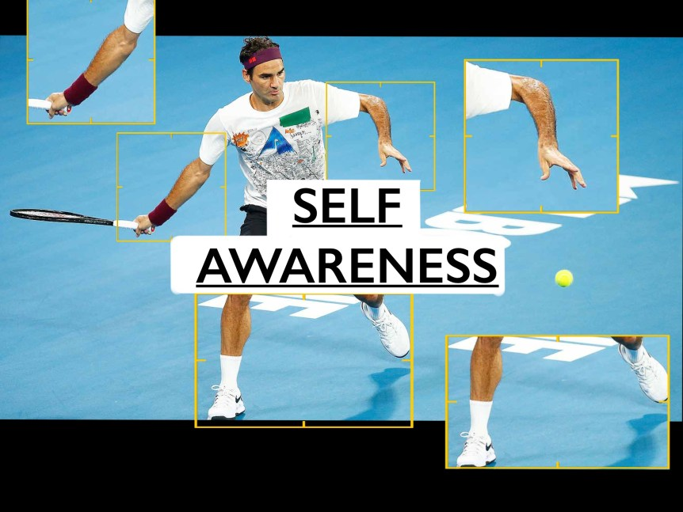

← Bài trước: Discipline | 🏠 Famous Coaches Trang chủ | Bài tiếp: → Creating American Champions Process
Tự nhận thức
Thư viện kiến thức quần vợt toàn diện — Cơ bản, Phân tích kỹ thuật, Thư viện tham khảo và nhiều hơn nữa
Tự nhận thức
Ean Meyer

Tự nhận thức | V1: Giới thiệu về Tự nhận thức
Đây là video đầu tiên giới thiệu loạt thứ ba trong Chương trình See: Tự nhận thức. Trong video này, chúng ta sẽ nêu rõ nội dung của loạt video còn lại. Tự nhận thức là một kỹ năng vô cùng quan trọng và tập trung vào việc nhận thức về điểm mạnh và điểm yếu của bản thân.
Tự nhận thức | V1: Giới thiệu về Tự nhận thức
Đây là video đầu tiên giới thiệu loạt thứ ba trong Chương trình See: Tự nhận thức. Trong video này, chúng ta sẽ nêu rõ nội dung của loạt video còn lại. Tự nhận thức là một kỹ năng vô cùng quan trọng và tập trung vào việc nhận thức về điểm mạnh và điểm yếu của bản thân.
Tự nhận thức | V2: Học cách ném bóng
Trong video này, bạn sẽ học được tầm quan trọng của việc ném bóng và cách thực hiện nó. Đây là một kỹ năng giúp luyện tập khả năng phối hợp giữa mắt và tay. Việc ném ba quả bóng giúp luyện tập khả năng nhìn thấy ba thứ cùng một lúc. Một quả bóng đại diện cho đối thủ, một quả bóng đại diện cho bóng, và một quả bóng đại diện cho lỗ hổng trên sân.
Tự nhận thức | V3: Bắt bóng từ không trung với tay ném
Khi học cách bắt bóng từ không trung, cần bắt đầu từ những điều đơn giản và dần dần tăng độ khó. Đây cũng là một dạng luyện tập giúp cải thiện phối hợp giữa mắt và tay. Không phải ai cũng hiểu được tầm quan trọng của kỹ năng này, mặc dù nó nghe có vẻ đơn giản.
Tự nhận thức | V4: Bắt bóng từ không trung với vợt ném
Sau video trước, chúng ta đã học cách bắt bóng từ tay ném. Bây giờ, chúng ta sẽ học cách bắt bóng từ vợt ném. Bằng cách sử dụng vợt thay vì tay, chúng ta có thể luyện tập khả năng phối hợp giữa vợt và bóng. Chúng ta sẽ bắt đầu từ những cú ném đơn giản và dần dần nâng cao độ khó. Sau khi luyện tập kỹ năng này và bắt đầu chơi bóng, nó sẽ giúp cải thiện khả năng phối hợp mắt và tay.
Tự nhận thức | V5: Bắt bóng sau một lần nảy với tay ném
Bây giờ chúng ta đã có thể bắt bóng từ không trung, chúng ta sẽ thử bắt bóng sau khi bóng nảy một lần. Trong bài tập này, chúng ta muốn đặt tay của mình theo hướng của bóng ngay từ lúc bóng chưa nảy. Việc thực hiện bài tập này đúng cách rất quan trọng, vì nó giúp chúng ta tiến triển đúng cách và cải thiện kỹ thuật chơi bóng.
Tự nhận thức | V6: Bắt bóng sau một lần nảy với vợt ném
Từ video trước, chúng ta đã học cách bắt bóng từ tay ném sau khi bóng nảy một lần. Bây giờ, chúng ta sẽ học cách bắt bóng từ vợt ném. Bài tập này thực sự giúp bạn đặt tay theo hướng của bóng khi đánh và thiết lập một nền tảng kỹ thuật tốt.
Tự nhận thức | V7: Bắt bóng trên đầu với tay ném
Khả năng bắt bóng trên đầu là một phần của tự nhận thức. Việc bắt bóng trên đầu đặc biệt hữu ích cho những cú đập bóng. Video này sẽ chỉ cho chúng ta cách thực hiện bài tập bắt bóng trên đầu và giải thích cách nó có lợi cho trận đấu của bạn.
Tự nhận thức | V8: Bắt bóng trên đầu với vợt ném
Trước đây, chúng ta đang ném bằng tay, nhưng bây giờ chúng ta đang ném bằng vợt. Để có thể thực hiện bài tập này dễ dàng, bạn phải đặt tay của mình theo hướng của bóng càng sớm càng tốt. Đây là một kỹ năng quan trọng cần được phát triển từ sớm.
Tự nhận thức | V9: Bắt bóng với người ném thay đổi hướng
Chúng ta vẫn đang thực hiện cùng một bài tập, nhưng bây giờ người ném sẽ bắt đầu thay đổi hướng. Đây cũng là một kỹ năng rất quan trọng cho tay vợt để có thể nhìn bóng bay từ vợt và xác định bóng sẽ đi trái hay phải. Cũng rất quan trọng là nhớ đặt tay hoặc vợt theo hướng của bóng càng nhanh càng tốt.
Tự nhận thức | V10: Bắt bóng với người ném thay đổi tốc độ
Trong video trước, người ném đã thay đổi hướng. Trong video này, người ném sẽ thay đổi tốc độ, có thể nhanh hoặc chậm. Điều này sẽ luyện tập tay vợt phản ứng khi bắt bóng.
Tự nhận thức | V11: Bắt bóng với người ném thay đổi xoáy
Gần đây, chúng ta đã xem xét một chút về người ném thay đổi hướng và người ném thay đổi tốc độ. Bây giờ chúng ta sẽ xem xét người ném thay đổi xoáy. Đây là một bài tập khó hơn vì hầu hết mọi người đều gặp khó khăn khi dự đoán vị trí bóng sẽ nảy.
Tự nhận thức | V12: Bắt bóng với người ném thay đổi chiều cao và độ sâu
Bây giờ chúng ta đang xem xét chiều cao và độ sâu. Lý do chiều cao và độ sâu được đặt cùng nhau là vì khi bạn nhìn thấy chiều cao, bạn có thể xác định được độ sâu. Ví dụ, khi bóng bay từ vợt của người ném, nếu bóng cao, nó có thể sâu; nếu bóng thấp, nó có thể ngắn. Việc biết cách dự đoán vị trí bóng sẽ giúp tay vợt có thể phản ứng nhanh hơn.
Tự nhận thức | V13: Bài tập thang 1
Sau khi thực hiện các bài tập để luyện tập khả năng phối hợp mắt và tay, chúng ta sẽ chuyển sang luyện tập khả năng phối hợp giữa mắt và chân. Chúng ta sẽ bắt đầu với các bài tập thang. Bây giờ chúng ta sẽ bắt đầu học bài tập thang đầu tiên. Bài tập thang đầu tiên là bước chia đôi. Bạn cần biết cảm giác của nó và khi nào nó xảy ra trên sân khi bạn lần đầu tiên nhìn thấy bóng rời khỏi vợt của đối thủ.
Tự nhận thức | V14: Bài tập thang 2
Bước chéo là bài tập thang thứ hai bạn cần học. Điều này hữu ích trong quần vợt khi bạn cần chéo chân sau khi đánh bóng. Các bước tiến triển là bắt đầu với cơ sở rộng, chéo chân trái vào thang, hạ chân vào bên kia với cơ sở rộng, chéo chân phải qua. Chìa khóa là đảm bảo rằng mũi chân của bạn hướng về đối thủ!
Tự nhận thức | V15: Bài tập thang 3
Bài tập thang thứ ba sẽ tập trung vào khoảng cách giữa chân của bạn. Khoảng cách giữa chân rất quan trọng nếu bạn muốn trở thành một người di chuyển tốt trong quần vợt. Vì vậy, bài tập là đặt hai chân vào thang với một ô giữa chúng. Sau đó, bạn phải nhảy qua thang và duy trì khoảng cách.
Tự nhận thức | V16: Bài tập thang 4
Một bài tập thang tuyệt vời khác là bài tập bước vào và ra. Đảm bảo rằng bạn đã thiết lập một cơ sở rộng, sau đó chân phải của bạn sẽ bước vào và ra khỏi thang trong khi chân trái của bạn vẫn ở ngoài thang. Bài tập này tập trung vào chân phải của bạn. Một chân đứng yên và chân kia di chuyển. Đây là một bài tập bộ chân chung để giữ cho tay vợt luôn trên chân.
Tự nhận thức | V17: Bài tập thang 5
Bài tập thang này giúp tay vợt luyện tập cơ sở hoặc thế đứng. Trong trận đấu, duy trì một cơ sở vững chắc cũng quan trọng như di chuyển nhanh trên sân. Bài tập này sẽ chuẩn bị cho khi tay vợt cần một thế đứng bán mở.
Tự nhận thức | V18: Bài tập thang 6
Trong quần vợt, một trong những cơ bắp quan trọng nhất là cơ Achilles. Cơ Achilles là một trong những cơ bắp chính duy trì sự ổn định và nhanh nhẹn khi di chuyển trên sân. Trong video này, chúng ta sẽ giải thích và trình diễn các bài tập giúp tăng cường cơ bắp này khi luyện tập bộ chân trên thang.
Tự nhận thức | V19: Bài tập thang 7
Bài tập hình chữ Z này có thể giúp bạn sẵn sàng trước khi thi đấu. Mặc dù bài tập này là một sự thay thế cho nhảy dây, nhưng nó được chỉ định để giữ chân nhẹ trên mặt đất. Khi xem video này, bạn sẽ thấy cách thực hiện bài tập này.
Tự nhận thức | V20: Bài tập thang 8
Giống như bài tập hình chữ Z bạn đã thấy trong video trước, bài tập này sẽ tương tự. Trong bài tập này, thay vì thực hiện hình chữ Z một chân một lần, chúng ta sử dụng cả hai chân. Khi thực hiện bài tập này, chúng ta sẽ luyện tập cơ Achilles, cơ đùi và cơ bụng. Khi xem video này, nó sẽ dạy bạn cách thực hiện bài tập này.
Tự nhận thức | V21: Bài tập thang 9
Trong bài tập này, chúng ta luyện tập giữ chân nhẹ, làm việc với cơ bắp và phối hợp. Tất cả những điều trên đều giúp bạn di chuyển trên sân trong trận đấu và trong luyện tập. Bài tập này luyện tập tay vợt di chuyển nhanh và giữ bóng trên chân.
Tự nhận thức | V22: Bài tập thang 10
Trong bài tập thang cuối cùng, chúng ta tập trung vào cải thiện khả năng phối hợp chân với bước chia đôi. Bài tập này có thể nghe có vẻ rất dễ dàng, nhưng đừng bị lừa - bài tập này đôi khi có thể gây nhầm lẫn cho tay vợt. Bước chia đôi thực sự là những bước quan trọng nhất trên sân để ổn định và chuẩn bị cho mỗi cú đánh.
Tự nhận thức | V23: Bài tập cọc 1
Bây giờ chúng ta chuyển sang bài tập cọc! Một cách khác để phát triển khả năng phối hợp mắt và chân là sử dụng cọc. Nó không nhất thiết phải là cọc vật lý - bạn luôn có thể vẽ các dấu trên sàn để luyện tập các bài tập này. Bài tập đầu tiên của chúng ta là nhảy từ điểm một và hai đến ba. Sau đó, nhảy từ ba đến bốn và năm, và quay lại. Đây là một khái niệm kiểu nhảy dây, một khái niệm nên dễ dàng thực hiện ở bất cứ đâu.
Tự nhận thức | V24: Bài tập cọc 2
Bài tập cọc thứ hai là một bài tập hình chữ Z khác. Bài tập này sẽ giúp bạn luyện tập khả năng nhanh nhẹn và bộ chân, mang lại lợi thế lớn trên sân. Một lần nữa, mặc dù đây được gọi là bài tập cọc, bạn có thể sử dụng bất kỳ loại vật dụng hoặc dấu hiệu nào để thay thế cọc.
Tự nhận thức | V25: Bài tập cọc 3
Đối với bài tập cọc thứ ba, chúng ta bắt đầu bằng cách đặt chân ở điểm 1 và 2. Trong bài tập này, khái niệm nhảy dây được sử dụng, và chúng ta luyện tập nhảy về phía trước và về phía sau. Lại một lần nữa, đây là một bài tập sẽ luyện tập chân nhẹ và nhanh trên sân.
Tự nhận thức | V26: Bài tập cọc 4
Bài tập cọc thứ tư là bắt đầu ở 1, sau đó đặt chân phải ở 3, chân trái ở 4, chân phải ở 5, chân trái quay lại 3, chân phải quay lại 2, và cuối cùng chân trái quay lại 1. Để có thể thực hiện bài tập này dễ dàng, bạn phải nhận thức được vị trí chân của mình. Việc thành thạo sẽ cho phép bạn thay đổi hướng nhanh hơn trên sân.
Tự nhận thức | V27: Bài tập cọc 5
Đối với bài tập cọc cuối cùng, bạn có thể đặt bao nhiêu cọc tùy ý và đặt chúng xung quanh tay vợt như một đồng hồ. Một người sẽ chỉ vào một cọc và người kia sẽ bước vào hướng đó. Bài tập này kiểm tra và cải thiện thời gian phản ứng của bạn.
Tự nhận thức | V28: Bài tập hộp 1
Bây giờ, chúng ta chuyển sang bài tập hộp đầu tiên. Bài tập hộp là một cách tốt để phát triển khả năng phối hợp mắt và chân. Vì vậy, trong video này, chúng ta sẽ học cách thực hiện bài tập hộp bằng cách sử dụng khả năng phối hợp phản xạ cũng như phối hợp tay và chân.
Tự nhận thức | V29: Bài tập hộp 2
Khi trên sân quần vợt, chúng ta muốn giữ chân nhẹ. Vì vậy, trong bài tập hộp này, chúng ta sẽ luyện tập khả năng phối hợp mắt và chân, giữ chân nhẹ. Xem video và xem cách chúng ta có thể luyện tập di chuyển trên sân với tốc độ và nhanh nhẹn!
Tự nhận thức | V30: Bài tập hộp 3
Bài tập hộp thứ ba của chúng ta không chỉ cải thiện khả năng phối hợp mắt mà còn cho phép chúng ta luyện tập xoay hông và vai khi chuẩn bị thực hiện cú đánh. Động tác này cho chúng ta một cách để luyện tập động lượng góc.
Kết thúc

Ean Meyer, một huấn luyện viên quần vợt chuyên nghiệp từ năm 1987. Trong suốt những năm, tôi đã làm việc với mọi cấp độ của tay vợt từ người mới bắt đầu đến chuyên nghiệp, huấn luyện quần vợt trong hơn 25 năm và đã làm việc với nhiều cấp độ khác nhau của trẻ em và người lớn. Trong thời gian này, tôi đã làm việc tại các học viện cao cấp bao gồm Bollettieri’s, Seguso-Bassett, Evert Tennis Academy và gần đây nhất là Harold Solomon Tennis Institute. Tôi đã được xuất bản trong các tạp chí quần vợt ở Brazil, Venezuela, Ý, Nam Phi và Hoa Kỳ và đã tổ chức các hội thảo cho các huấn luyện viên ở các quốc gia khác nhau. Triết lý huấn luyện của tôi rất đơn giản: Phát triển các kỹ thuật cơ bản trong 4 lĩnh vực – Kỹ thuật, Chiến thuật, Tâm lý và Vật lý.
Truy cập trang web của tôi tại: https://eanmeyertennis.com và https://tennis.pro/
Nguồn: tennisplayer.net lưu trữ — Tự nhận thức.docx (Thư viện giảng dạy của John Yandell, 2002-2022). Đã được trích xuất và hiển thị dưới dạng HTML cho Tennis Future Lab.